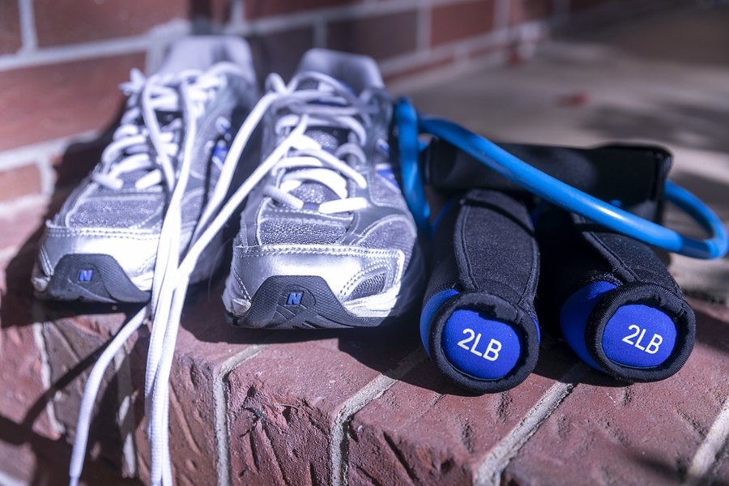

Does Vigor Boost Work? What the Evidence Can and Can't Tell You
No clinical trial, nine ingredients and an 82 mg blend. Here's how to judge a vitality gummy when the product itself has never been tested, and the signs that point to a doctor rather than a supplement.

Key takeaways
- Nobody has tested Vigor Boost itself. There's no published clinical trial on the finished gummy, so any claim rests on ingredient research.
- The ingredient research uses much bigger doses. Maca trials used 1,500 to 3,000 mg a day; the whole Vigor Boost blend is 82 mg.
- Realistic upside is mild. A little caffeine, a familiar daily routine and possibly a small lift in how you feel. Not a change in hormones or erections.
- It isn't an ED treatment. Erection problems that are new or lasting can be an early sign of heart disease, diabetes or low testosterone.
- The 60-day guarantee is your test window. Track a few measures in writing and decide on numbers, not impressions.
Does Vigor Boost work? There's no clinical trial of the gummy, so nobody can say for certain. Its nine ingredients have traditional use and some human research, but mostly at doses many times larger than its 82 mg blend. Expect mild effects at best. It doesn't treat erectile dysfunction, and it won't change testosterone.
That answer can sound harsher than it is. Plenty of supplements are in the same position. The point of this page is to show how we got there, so you can judge it yourself: what "working" should mean for a vitality gummy, which ingredients have real data, how dose changes the picture and when a symptom deserves a doctor rather than a bottle. The label, price and refund details are in our Vigor Boost review.

Vigor Boost: check today's price
A once-daily men's vitality gummy with maca, muira puama, tribulus and horny goat weed. Sold only on the official site, with a 60-day money-back guarantee.
See the official price →What would it mean for Vigor Boost to work?
The bottle says it "supports men's vitality." That's a structure-function phrase, and it's deliberately vague. Before you can test a product, you need a sharper target. For a gummy like this, reasonable questions are:
- Do you feel more awake in the afternoon?
- Has interest in sex changed, by your own honest rating?
- Do workouts or long days feel any easier?
- Is your mood or sense of stress any different?
Notice what's missing. Firmer erections, bigger size, higher testosterone and anything that sounds like a prescription drug effect aren't reasonable targets. The formula isn't designed for them, the label doesn't claim them, and the research on its ingredients doesn't support them. Any website that promises those results is selling something the gummy can't deliver.
Has Vigor Boost been tested in a clinical trial?
Not that we could find. We searched for published studies on the finished product and found none, which is common for supplements sold online. The company doesn't cite one on the label either.
That matters because a formula isn't just a sum of ingredients. A trial tells you whether the specific doses, in the specific form, taken for a specific period, did better than a placebo. Without one, you're borrowing results from studies of different products, at different doses, often in different populations. It's the gap between "maca has been studied" and "this gummy has been studied." Ingredient evidence is a reason to be curious. It isn't proof.
What would a fair trial of Vigor Boost look like?
It wouldn't need to be huge. Take 100 or so healthy men, give half the gummy and half an identical-looking candy with no actives, and have neither the men nor the researchers know who got what. Measure validated questionnaires on energy and sexual desire before and after 8 to 12 weeks. Publish the results, good or bad.
That design is standard and affordable by drug-industry standards. Until a study like it exists, the honest description of the product is "untested as a finished formula." That's not an accusation. It's simply where the evidence stands, and it's where most gummies on the market stand too.
Which Vigor Boost ingredients have real evidence?
Here's what the human research on each ingredient supports, set against how much the gummy can hold. The last column comes from the label's descending-order rule and its printed 10 mg of caffeine; our Vigor Boost ingredients breakdown shows the full math.

| Ingredient | What human studies suggest | Studied dose | Max in one gummy |
|---|---|---|---|
| Maca | Small rise in self-reported desire; no hormone change | 1,500 to 3,000 mg | About 17 mg |
| Ashwagandha | Lower perceived stress, better sleep; small testosterone shifts in a few trials | 300 to 600 mg | About 21 mg |
| Tribulus | No testosterone rise in healthy men; libido results mixed | Often 750 mg or more | 10 mg or less |
| Horny goat weed | Lab activity only; little human data | Not established | 10 mg or less |
| L-arginine | Blood flow effects at gram doses | 3,000 to 6,000 mg | 10 mg or less |
| Caffeine | Alertness, reaction time | 40 mg and up for noticeable effects | 10 mg |
| Muira puama, catuaba | Traditional use, almost no controlled trials | Not established | About 32 and 15 mg |
Two things jump out. The best-supported ingredients, maca and ashwagandha, sit at a small fraction of their research doses. And the ingredients most closely tied to sexual function in marketing, tribulus and horny goat weed, have the weakest human evidence and the smallest share of the blend.
What about all the online reviews that say it works?
Search for this product and you'll find pages full of glowing reviews, star ratings and before-and-after stories. Many are affiliate pages paid per sale, and few disclose how they gathered their ratings. We don't publish ratings or testimonials, because we can't verify who wrote them or whether those people took the gummy. A pile of five-star quotes tells you about marketing budgets, not about effect size.
Can 82 mg of herbs do anything?
Small doses aren't automatically useless. Caffeine shows that some compounds act at low amounts. But for most botanicals, the studies that found effects used hundreds or thousands of milligrams, taken daily for weeks. Splitting 72 mg (82 minus the caffeine) among eight ingredients leaves each one far below those levels.
The label adds that the blend is "equivalent to approximately 567 mg of dry powders." That's the weight of dried plant used to make the extracts, not the amount you take. It sounds closer to research doses than it is, and even 567 mg would cover only a third of the low end for maca alone.
What about the placebo effect?
It's real, and it's large in this area. In trials of treatments for sexual function and energy, men taking placebo often report meaningful improvement. Expectation, paying attention to the issue and a fresh routine can all change how you rate yourself. That doesn't mean you're imagining things. It means any improvement you notice is hard to credit to the gummy without a comparison. It's also why written tracking beats memory.
Will it help stamina in the gym?
Probably not in a way you'd measure. Caffeine improves endurance at roughly 3 mg per kilogram of body weight, which is around 250 mg for an average man. One gummy holds 10 mg. Ashwagandha has a few studies on strength and recovery at 300 to 600 mg, and arginine has been tested at grams. The training effect you're after will come from the training.
What can't Vigor Boost do?
Being clear about limits is the most useful thing a page like this can offer. Based on the label and the research, Vigor Boost can't:
- Treat or cure erectile dysfunction, or work like Viagra, Cialis or any prescription drug.
- Raise testosterone in a measurable way at these doses.
- Increase size. No supplement does, and claims that one does are a red flag.
- Fix the causes of low energy, such as poor sleep, sleep apnea, depression, anemia, thyroid problems or heavy drinking.
- Replace medication you've been prescribed for blood pressure, diabetes or heart disease.
If a seller or ad suggests otherwise, trust the label over the ad. The label says the product isn't intended to diagnose, treat, cure or prevent any disease.
One more point about claims. HorseBoost, a strawberry gummy from a related Florida company, uses the same 82 mg blend with 5 mg of caffeine instead of 10. If either product worked dramatically, the other would too, because the active formula is the same. Our Vigor Boost vs HorseBoost comparison covers the small differences.
When should you see a doctor instead of trying Vigor Boost?
This is the section we'd most like readers to take seriously. Erection problems are often an early warning, not just a nuisance. The arteries that supply the penis are narrower than the coronary arteries, so they tend to show damage from plaque earlier. Studies have found that ED can precede heart symptoms by several years.
Book a visit rather than reaching for a supplement if any of these apply:
- Erection problems are new, getting worse or have lasted more than a few weeks.
- You have chest pain, shortness of breath on exertion or a family history of early heart disease.
- You have diabetes, high blood pressure or high cholesterol, or haven't been checked in years.
- You feel tired all the time, have lost muscle or have a much lower sex drive, which can point to low testosterone.
- You snore loudly or wake up unrefreshed, possible signs of sleep apnea.
- You've started a new medication. Some antidepressants and blood pressure drugs affect sexual function.
A primary care doctor can check blood pressure, blood sugar, cholesterol and, if needed, a morning testosterone level. Every one of those problems is treatable, and treating them often improves energy and sexual function together. Our article on low testosterone in men explains the symptoms that justify a blood test.
Embarrassment keeps a lot of men away from that conversation, and doctors know it. You don't need perfect words. Saying "things aren't working the way they used to" is enough to start. Proven treatments exist for most causes, from blood pressure control to prescription medication to counseling, and they're far more likely to help than any over-the-counter blend.
What actually helps energy and libido?
Unglamorous habits beat any gummy on the evidence. Regular aerobic exercise improves blood vessel function, and studies of men with ED have found that physical activity helps. Even daily walking counts, as our piece on walking and health shows. Losing excess weight, cutting back on alcohol and stopping smoking all improve circulation.
Sleep is the other big lever. Testosterone is produced mostly during sleep, and a week of short nights measurably lowers it in young men. Treating sleep apnea often improves daytime energy quickly. Stress matters too, which is part of why ashwagandha gets attention at proper doses. None of this is as tidy as a daily gummy, but it moves the outcomes the gummy only hints at.
How can you tell if Vigor Boost is working for you?
Use the 60-day money-back guarantee as a personal trial. Before the first gummy, rate three things from 1 to 10 for a week: afternoon energy, interest in sex and how stressed you feel. Write the scores down. Then take one gummy each morning and score the same three weekly.
Keep the rest of your routine steady so the comparison is fair. Around week six, look at the numbers. A consistent two-point rise in something you care about is worth noticing. Scores that wander up and down around your starting point mean the gummy isn't adding much, and that's the signal to request a refund through the official checkout while the window is open.
Who might reasonably try Vigor Boost?
A healthy man with no worrying symptoms, no interacting medications and a realistic goal can try it without much risk. It suits someone who likes the idea of traditional botanicals in an easy daily habit and treats the guarantee as a test rather than a promise.
Set the bar where the evidence puts it. If the gummy makes your mornings feel a little brighter and you like the routine, that's a fair result for its price. If you were hoping for a transformation, the honest answer is that 82 mg of herbs isn't built for one, and your money may go further on a gym membership, a sleep study or a doctor's visit.
It's a poor fit if you're on nitrates, ED medication or blood pressure drugs without your doctor's agreement, if you have thyroid or liver disease, or if you've had recent erection trouble that nobody has looked into. Those cautions are spelled out in our Vigor Boost side effects guide, and the wider topic lives in our men's health section.
Vigor Boost: check today's price
A once-daily men's vitality gummy with maca, muira puama, tribulus and horny goat weed. Sold only on the official site, with a 60-day money-back guarantee.
See the official price →Frequently asked questions
How long does Vigor Boost take to work?
The label doesn't give a timeline, and there's no product trial to set one. Ingredient studies on maca and ashwagandha ran 8 to 12 weeks at much higher doses. Within the 60-day guarantee, six weeks of written tracking is a fair test.
Does Vigor Boost work like Viagra?
No. Prescription ED drugs are tested, dosed medicines that act on a specific enzyme. Vigor Boost is a dietary supplement with small amounts of herbs, and it is not intended to treat erectile dysfunction.
Will Vigor Boost increase size?
No. No supplement has been shown to increase size, and products that claim to should be avoided. The Vigor Boost label makes no such claim.
Do the 10 mg of caffeine explain any energy I feel?
Possibly a little. Ten milligrams is about a cup of decaf, so most people won't notice it, but caffeine-sensitive people might. If you drink coffee already, it adds very little.
Is Vigor Boost better than taking maca powder?
For maca specifically, a plain powder lets you take the 1.5 to 3 g used in studies, which a gummy can't. Vigor Boost's appeal is convenience and a mix of ingredients, not dose.
Can young men take Vigor Boost?
The label is for adults and gives no age range. Younger men with erection problems should see a doctor, because causes such as anxiety, medication effects or undiagnosed conditions are better addressed directly.
What if Vigor Boost doesn't work for me?
Orders through the official checkout carry a 60-day money-back guarantee. Read the current refund steps on the official page and request it before the window closes.
Want to test it yourself?
One gummy a day with a 60-day money-back guarantee, ordered through the official checkout. See current Vigor Boost prices on the official page.
See Vigor Boost's official price →Related: Vigor Boost review: label, price and verdict · Vigor Boost ingredients explained · Low testosterone in men · Walking and health